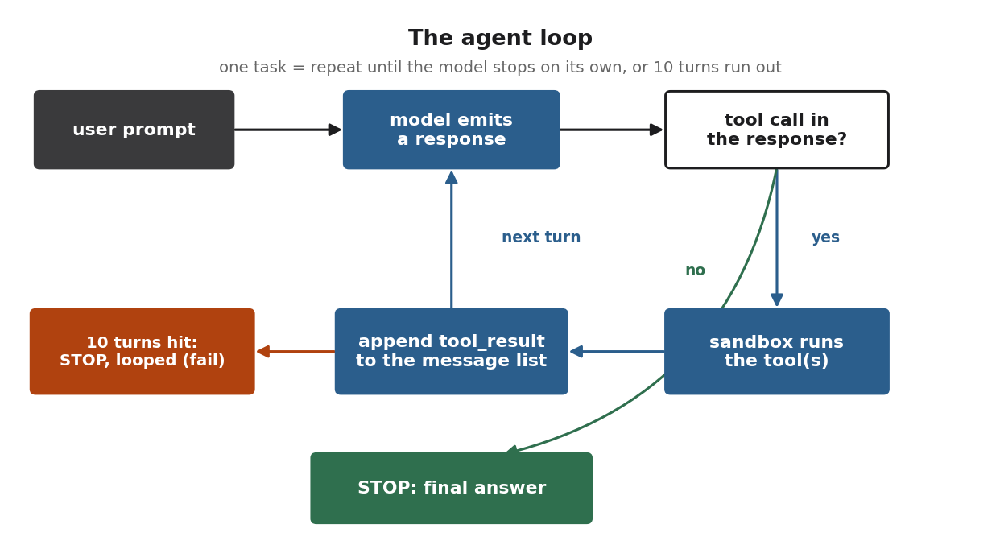

Method
The harness and the ingredients
The baseline post threw around a lot of numbers, a 0.89 here, a 0.68 there, without saying where they came from. This post covers the two things behind every number in the series: the harness that measures the model, and the data I trained it on. I built both myself.
How I measure
The obvious move is to grab a standard benchmark. I didn’t, and the reason requires some explaining.
Benchmarks like HumanEval ask the model for one function and grade whether it passes some unit tests (pass@1). That measures whether a model can write code. It says nothing about whether it can pick the right tool, keep a file path intact, read a file before editing it, or notice it’s finished and stop.
The field already knows this gap is real: high scores on HumanEval-style tests don’t predict agentic capability, which is why the serious agentic benchmarks (SWE-bench Verified, Terminal-Bench, tau-bench) exist at all. The spread is stark: MiniMax M2.5, for instance, scores 89.6 on HumanEval but only 42.2 on Terminal-Bench. Same model, two very different questions.
Those benchmarks are built for frontier models doing hard, hours-long tasks. I needed the same kind of measurement, “can it drive the loop,” shrunk to something I can run hundreds of times on one GPU while I iterate. So I built the smallest honest version of one. It has three parts.
An agent loop. Send the prompt, let the model respond, and if its response contains a tool call, execute the tool, append the result to the running message list, and hand it back. Repeat until the model answers with no tool call (it decided it’s done) or until it burns through 10 turns (it looped, and that counts as a failure).

That’s the same shape as a real coding agent. The message list grows by two entries every turn (the model’s tool call, then the tool result), the model always sees the full history, and “stopping” is a real decision the model gets right or wrong, not something the harness does for it.
A sandbox. Every tool (Write, Read, Edit, Bash, Grep, Glob) runs inside one throwaway directory, and a leading / gets stripped so an absolute path becomes relative to that directory. Real sandboxed runtimes behave the same way, and it’s why the base model’s absolute-path writes landed in the wrong place at baseline.
A rubric. Each task scores from 0 to 1 as the fraction of its checks that pass. The absolute-path task checks five things: a tool was called, it was Write, the file exists at the right place, it has the right content, and the model didn’t loop. Pass three of five and you score 0.60.
Here is that exact task on the base model, scoring 0.60. Same prompt, real recorded transcript:
base 0.8B · reward 0.60 · 3 of 5 checks prompt: Create a file at /home/user/project/test_path.py with the content "pass" Write file_path = "/home/user/project/test_path.py" ↑ echoes the absolute path straight back → Wrote 4 bytes to home/user/project/test_path.py ↑ leading / stripped: now a deep nested folder "I've created the file ..." ↑ stops cleanly, but the file is in the wrong place
And the same task after the SFT in the next post, scoring a full 1.00:
after SFT · reward 1.00 · 5 of 5 checks Write file_path = "test_path.py" ↑ bare filename, no echo → Wrote 4 bytes to test_path.py ↑ lands at the sandbox root, where it was asked for "Created test_path.py ..." ↑ same clean two-turn shape, right place
The behavior I’m training toward is the second transcript, and the rubric is what lets me see the difference as a number instead of a vibe.
The full harness is 19 tasks, two conditions (Raw = tools only, Full = tools plus a small system prompt of tool-use rules), three runs each. Three runs because single runs are too noisy, a lesson the baseline run paid for: one off-the-cuff run looked like 5 of 8 passing, and the three-run average was 42%.
The training data
The harness measures; the data is what the model learns from, and for a model this small the list is short by design. Around 140 examples to start. Both sources are teacher-generated; what separates them is the teacher and how much human review each trace got.
The gold set (49 examples). Generated with a frontier teacher, Claude Opus 4.6/4.7, then reviewed and corrected by hand, one trace at a time, across the seven behaviors I most wanted: path handling, read-then-edit, stopping on time, error recovery, multi-step Write-Bash-report chains, no-op detection, and tool selection. This is the highest-trust slice in the set: a strong model proposes the trace, a human signs off on every token. Slow, but it pins down the exact patterns the rubric rewards before any cheaper data gets near the model.
The scale set. To get past a few dozen I switched to a much larger open sibling, Qwen3.5-397B-A17B, through OpenRouter, driven through the same sandbox the eval uses. It’s far cheaper to run at volume, and its hit rate is lower, so here the quality control is automated rather than a human reading every trace.
What makes the scale set trustworthy is an automated check: a generated trace is only kept if it runs through the sandbox and scores well against the same rubric the eval uses. A trace that writes to the wrong path, or loops, or never stops, gets thrown out before it can teach the student a bad habit. That check is strict: on one batch of code-generation prompts only 67.6% survived (100 of 148 kept), and a retry pass on the rejects recovered just 15 of 33. A third of what a 397B teacher produces isn’t good enough to learn from, and catching that cheaply, before training, is why every trace runs through the sandbox first.
The traces split into two tiers: Tier A, the agentic ones (multi-tool chains, error recovery, the behaviors that carry the real signal), and Tier B, single-turn code generation in Write-tool format. That A-versus-B distinction looks like bookkeeping now. In the next post it turns out to be the difference between data that helps and data that hurts.
One rule sat above all of this: no system prompt in the training data. The baseline run showed the system prompt was a liability for the base model, dropping it from 0.89 to 0.68. If the plan is to bake the protocol into the weights, the model has to learn each behavior from the trace itself, not from an instruction I’d then be forced to ship at inference time. Every training example is therefore just tools, the user turn, and the assistant’s actions. The protocol lives in what the assistant does, never in what it’s told.
Next
That’s the harness and the data. The harness can tell a clean two-turn success from a six-turn flail, and the data is 140-odd validated traces with no system prompt and a heavy bias toward agentic behavior. The SFT post is what happened when I actually trained on it, including the masking bug that quietly wasted most of the gradient signal and the run where adding data made the model worse.